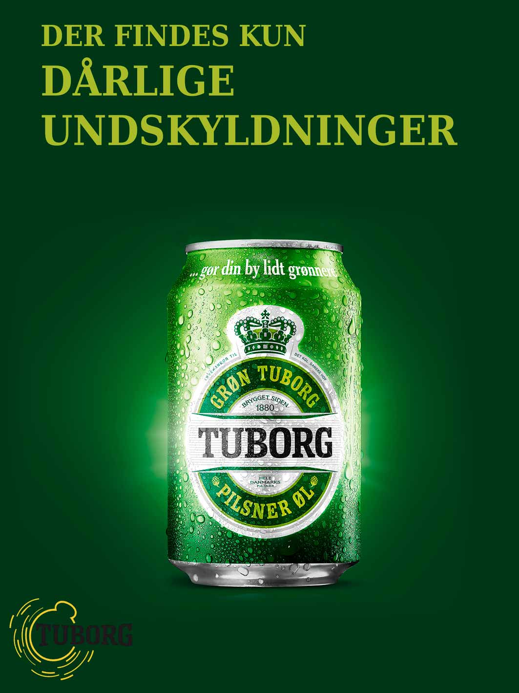
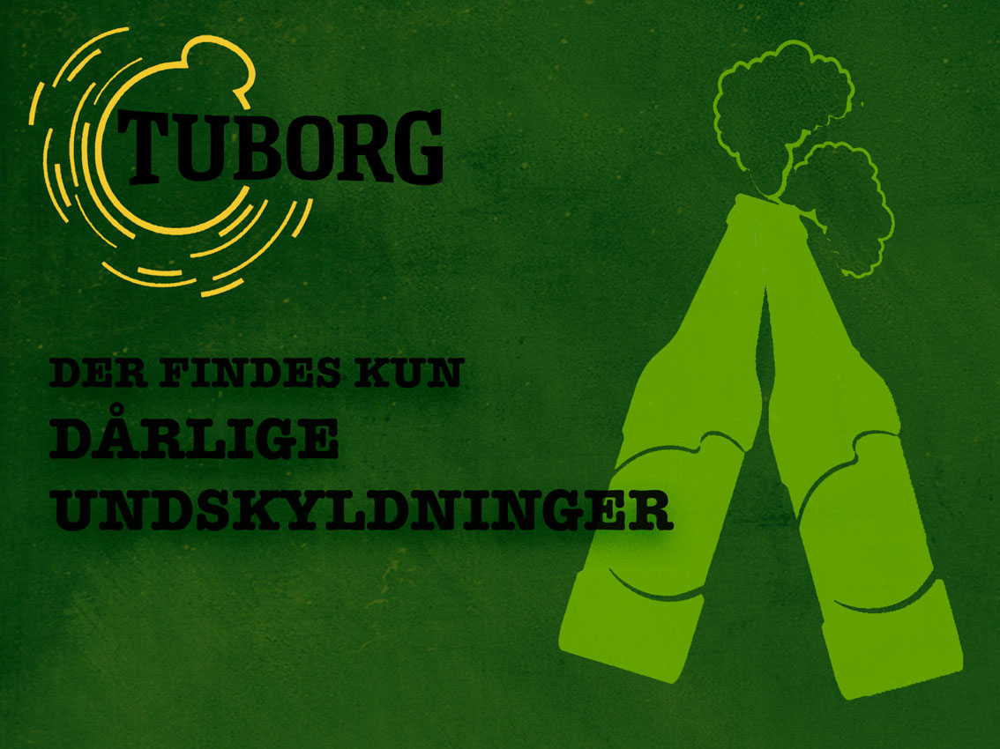

Tuborg sommerkampagnen var et af de første projekter vi lavede i grupper. Det var et spændende indblik i, hvordan de andre i klassen arbejdede, og greb designfaget an, og hvordan arbejdsmetoden i design er. Vi skulle designe et logo, et slogan, et landing page og en abribus reklame til en som-merkampagne for Tuborg. Vi startede med at lave moodboards henholdsvis til sommer og til øl, det var også første gang, at vi arbejdede med moodboards i undervisningen.
Ud fra stemningerne på vores moodboards begyndte vi at brainstorme slogans.
Vi endte med at vælge ”der findes kun dårlige undskyldninger”.
Derefter gik vi hver især i gang med at skitsere vores idéer. Efter vi havde lavet vores skitser, præsenterede vi dem for hinanden og lavede så en fælles skitse over hvad vi blev enige om, der skulle være på henholdsvis vores landing page og på vores abribus og hvordan vores logo skulle se ud. Dette var som sagt tidligere, et spændende indblik I de andre i gruppens måde at gribe design an, da man hver især måtte argumentere for de design valg man havde gjort sig, og vi måtte igen diskutere design valg da vi lavede en skitse sammen.
Da skitserne var på plads, lavede vi dem i Photoshop. Det var første gang, at vi tegnede vores skitser op i Photoshop, hvilket også var sjovt at prøve. Det gav os lidt en smagsprøve på, hvad vi kom til at skulle lave i design.  Vores landingpage:  Jeg har valgt at præsentere denne øvelse da det var en af de første øvelser vi lavede på dette semester, og jeg synes den gav et godt indblik i, hvordan man arbejder i design. Desuden blev vi kastet ud i denne opgave uden at have meget viden om design generelt, hvilket resulterede i at vi legede os frem til resultatet og at det var et af de første projekter vi havde, blev resultatet ikke det bedste, men vi havde det sjovt og eksperimenterede løs med de mange muligheder vi havde. Det var også en god måde at få set hvad Photoshop kunne give som man ikke kan med analog arbejde, som f.eks. teksturen på baggrunden af vores landing page.